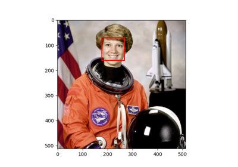
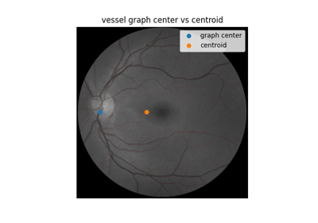
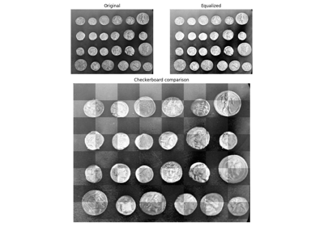
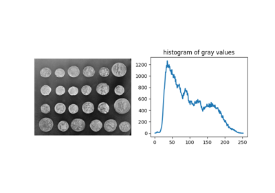
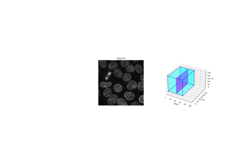
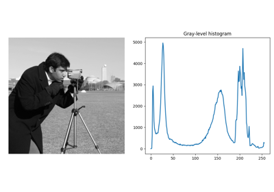

Source
SourceLonger examples and demonstrations¶
Render text onto an image

Face detection using a cascade classifier
Face detection using a cascade classifier
Interact with 3D images (of kidney tissue)
Interact with 3D images (of kidney tissue)

Use pixel graphs to find an object’s geodesic center
Use pixel graphs to find an object's geodesic center

Visual image comparison
Morphological Filtering
Estimate anisotropy in a 3D microscopy image
Estimate anisotropy in a 3D microscopy image

Comparing edge-based and region-based segmentation
Comparing edge-based and region-based segmentation
Colocalization metrics


Track solidification of a metallic alloy
Track solidification of a metallic alloy
Measure fluorescence intensity at the nuclear envelope
Measure fluorescence intensity at the nuclear envelope
Face classification using Haar-like feature descriptor
Face classification using Haar-like feature descriptor

Explore 3D images (of cells)

Rank filters